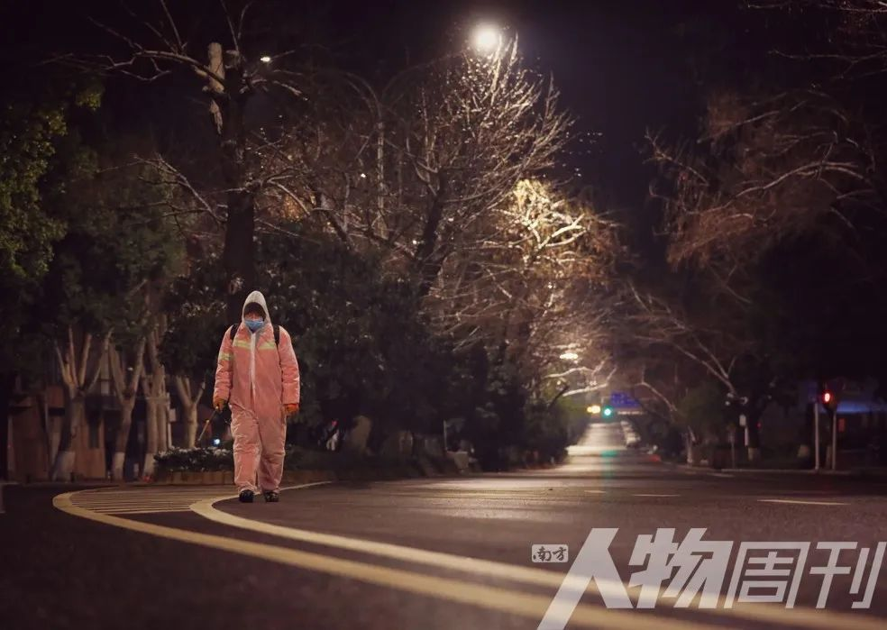
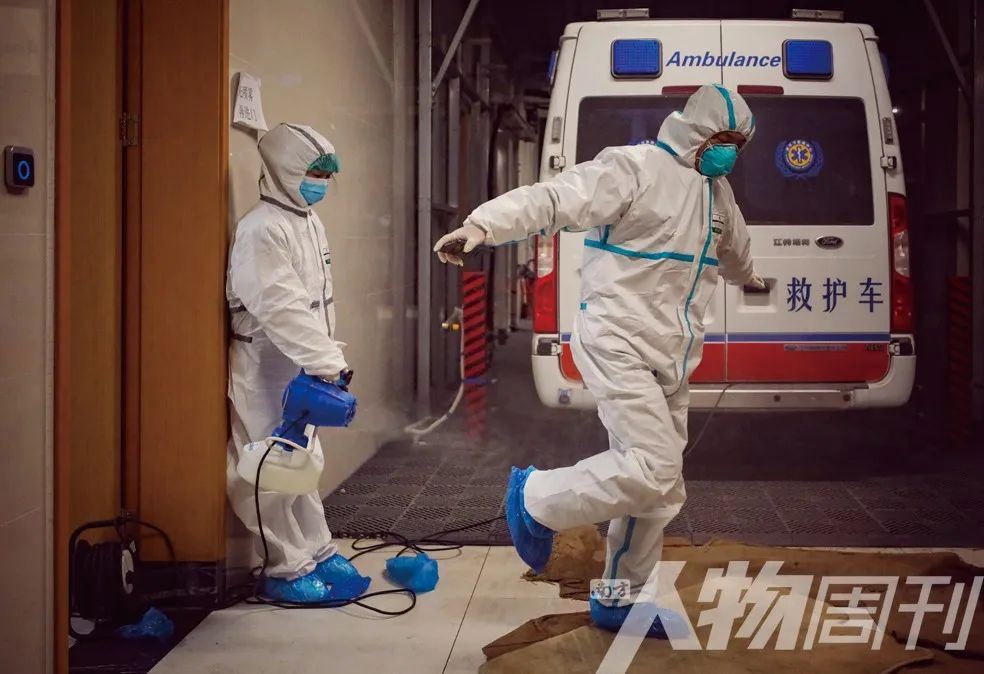
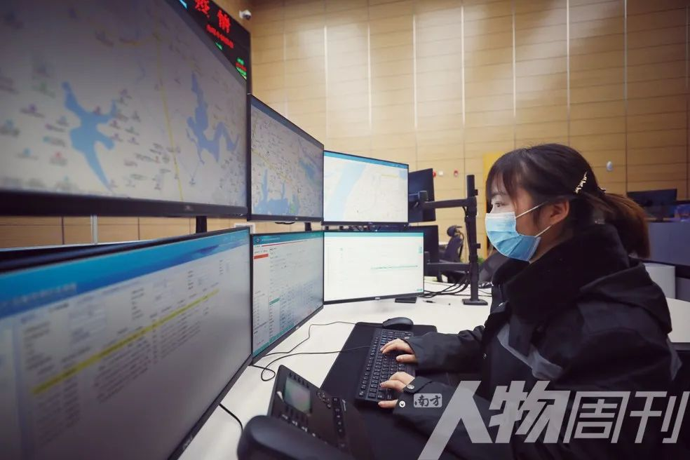
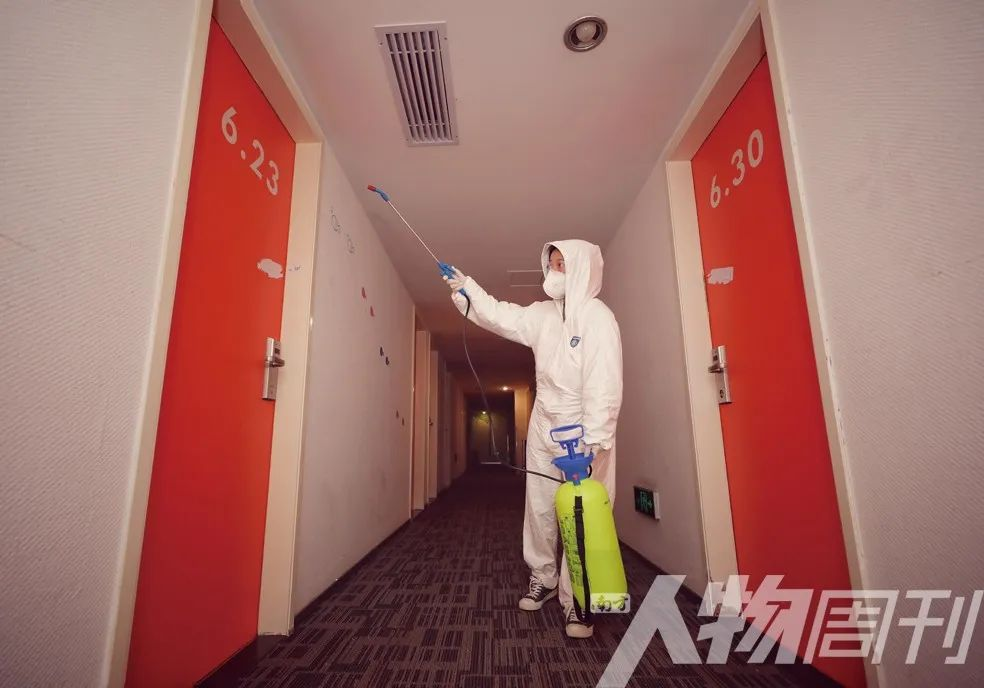
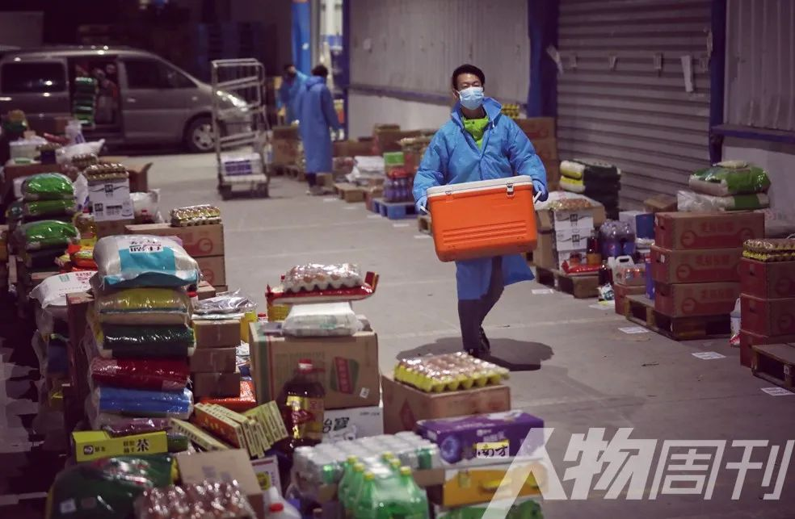

武汉战疫50天：封城之虑
原文链接 备份链接 24.02.2020本文字数：3621，阅读时长大约6分钟 导读：封城武汉，不是孤城。 作者 | 第一财经 周芳 作为疫情始发地，一座千万人口级别大都市选择封城，这在新中国还是第一次。 但武汉封城为尽可能多地减少传染 …
2月的春光已经露出些明媚，但每当入夜，疫情下的武汉依然春寒料峭，霜寒刺骨。医护人员夜以继日地奋战在战“疫”一线，“宅家”的市民们或已进入梦乡，在城市的街头巷尾，还有一群“守夜人”出入于寒风中。黎明不远，终将来临。黎明前的至暗时刻，这宁静的夜晚，正是他们在守护
本文首发于南方人物周刊2020年第4期
图、文 | 陈亮 编辑 | 方迎忠 郑洁
全文约2172，细读大约需要5分钟
消杀毒工人聂和平

48岁聂和平负责洪山体育馆方舱医院北门（体育馆路）的清扫保洁和消毒工作。
“感觉武汉疫情严重，整个城市太安静了。武汉限制出行后，每天上上班，是最开心了，能出去走走。面对疫情最重要的是保持乐观心态，我还年轻，抵抗力强，我不怕！”聂和平说，“等疫情结束后，我要好好休息两天，带上家人把武汉好好转转，平时太忙了。”
急救医生王科

王科是武汉市急救中心“肺炎急救”专班成员，每天下午4：30至第二天早上8：30负责120急救工作。
“疫情发生以来，整个城市街道寥寥数人，每天武汉三镇忙于接送急救病人，心里倍感失落。”王科感叹道。“平日工作里，遇到低血糖病人，通过急救让病人苏醒，我就特有成就感。现在跟新冠肺炎患者一起，除了帮助病人保持呼吸畅通，还要多做心理辅导，给他们加油鼓劲！”
120调度员陈蕾

疫情发生后，武汉市急救中心工作量剧增。120调度员陈蕾每天晚上8点至早上8点工作不停歇。
“每天，呼吸道疾病的呼叫量比例大，各类急诊重症病例上升。经常遇到接送的病人无法正常入院，特殊时期，救护车需辗转几个医院。我要快速地将接收医院找到，让病人入院。每当病人成功入院，我都特别欣慰。”陈蕾说，“等疫情结束，我要好好睡个觉。”
酒店店长刘蕾

90后刘蕾是布丁酒店抗击疫情战队队长，酒店离医院比较近，于是成为省妇幼保健院、陆军总医院、672医院等医院前线医护人员的住宿点。
“一天晚上，我正在吃泡面，一位医生从医院里带了个馒头给我，也没有留言，感觉挺暖的。元宵节他们从医院里带汤圆给我们吃，说我们辛苦了。”
便利店员工吕梦婷

便利店每天保持24小时营业，28岁的吕梦婷上夜班的次数比较多，晚上8点到第二天早上8点。父母和弟弟都在孝感，她跟男朋友在武汉。
“不管你做哪个行业，都要承担起责任，疫情前也会上夜班，其实是一样的。现在我们周围没有开店的，感觉对顾客实现了承诺，始终留着这盏灯。”
蔬果加工员王花

疫情期间，武汉美菜网蔬果加工员王花的工作量突然增加，基本是加了四个小时左右，最长的一次从上午11点工作到了第二天11点。
“原来打包分拣，我们二十多个人分拣一万多个包裹。现在人少，十几个人来分，所以压力也大一些。因为人员不够，还需要进行筛果的工作。但我们在这里吃得很好，比在家里吃的还要好。”
菜品配送司机刘浪

刘浪是湖北荆门人，在武汉疫情最严重的时候，回到武汉，想要给这座城市帮帮忙。
“自己在家的时候，看各种新闻报道，感人的一线医护事迹，看到一个市长在一线工作然后被感染了，当时觉得很感动。我在家有物资储备，但因为疫情武汉的饭店商户基本关门，就会担心武汉的居民都吃啥……反正自己在家也没事，就来干呗。”
早餐面点厨师沈师傅

疫情期间，沈师傅负责为附近方舱医院、援汉医疗团队的医务人员准备每日三餐，凌晨3点上班，一直工作到下午五六点。
沈师傅18岁当过兵，那年正是汶川地震，虽然没被派去支援，但是每天看到新闻和前线发来的消息就很想也出一份力。“一个当过兵的人在这种时刻的感受就是，在家里待不住。躺在家里看到新闻，就想马上过来看能帮什么忙。”
外卖小哥张程

张程瞒着妈妈做了骑手，疫情期间每天接单可达到80-90单，送单成绩居区域前三。为了方便工作，他之前每天会煮五六个水煮蛋吃，现在已经要吃十个了。
“工作上成就感最强。前些天给江苏医疗团队送物资。那个单子只有我拿到了，觉得给这些逆行的白衣天使送东西，挺光荣的。”
长江大桥交警刘升

长江大桥交警大队一中队副中队长刘升今年38岁，妻子和6岁的孩子在疫情前回海南过年了，他原计划封城当天到海南和家人团聚。
“曾经的长江大桥，车多得需要分单双号通行，每天行人游客众多，现在几乎没车没人走。疫情期间，有个老人从汉口那边步行去武昌给女儿送物资，走到长江大桥就累得不行了。当时我发现了，就帮他给送过去了。武汉封城交通中断，的确给大家出行带来很大的困难。”刘升说，“现在的勤务和原来完全不一样，24小时不间断岗位。疫情结束后，我要请中队全员吃烧烤，大家太辛苦了。”
融雪工陈建国

2月15日，武汉断崖式降温，狂风大雪。武昌中南清洁队陈建国负责八一路融雪工作。疫情期间，他每晚8点工作到第二天早上8点，对负责区域进行消杀毒及清扫工作。
“虽然是夜间，平日里武汉车流不息，如今，一个人都见不着。但每天在负责的洪山体育馆方舱外做消杀毒时，心里倍感骄傲，能为防疫抗疫尽绵薄之力。”
滴滴司机胡建斌

封城之后，滴滴车队的队长发起招募“医护保障车队”，免费接送武汉医务工作者，胡建斌第一个报名。
“这种时刻，作为武汉人就是本能啊，必须的啊！”胡建斌说，“本来计划和我老婆西藏自驾游的，希望疫情结束后尽早实现。”
小区保安刘勇

刘勇家在孝感农村，1月23日封城当天回到武汉值班，已经连续工作20多天，每天执勤站岗12个小时以上。他很担心家里两个孩子的安全，期待着疫情结束能回家团圆。
“我们社区的情况控制得还不错，业主也都很理解和支持我们，之前还有业主自发地送给我们三包口罩，真的挺感动。”
战“疫”专题：


点击“阅读原文”即可订阅和购买最新杂志
原文链接 备份链接 24.02.2020本文字数：3621，阅读时长大约6分钟 导读：封城武汉，不是孤城。 作者 | 第一财经 周芳 作为疫情始发地，一座千万人口级别大都市选择封城，这在新中国还是第一次。 但武汉封城为尽可能多地减少传染 …
原文链接 备份链接 *新京报记者 王昱倩 王瑞文 王洪春 王飞翔 实习生 王亚会 王泽勋 郭懿萌 编辑 李明 校对 翟永军* 导演程逸飞把纪录片的第一个画面留给了那条江。 一群赤条汉子吼几嗓子，挨个扎进江面。江边上，飘来熟悉的凤凰传奇的广 …
原文链接 备份链接 我们该从疫情中获取怎样的“抗体”和“免疫力”？1月29日，大年初五，在武汉市汉口解放大道，一位被确诊新冠肺炎的患者正在转院。摄影/长江日报 金思柳 疫情“罗生门”：患者、医者、决策者 《中国慈善家》记者/温如军 吴可 …
原文链接 备份链接 **记者/佟晓宇 ** 编辑/石爱华 宋建华 刘畅穿上防护服，进入隔离室 离开一岁多的孩子，刘畅上了“前线”，给儿子自然离乳的计划，没办法实现了。 刘畅是一名耳鼻喉科的护士，她所在的医院是武汉市第一批收治新冠肺炎患者的 …
原文链接 备份链接 一座人口过千万的超级大都市在突降灾疫后陷入休克，然后艰难走出混乱无望 财经封面。创意设计/黎立 文 |《财经》特派武汉记者 刘以秦 信娜 王小《财经》记者 房宫一柳 黎诗韵 俞琴 王丽娜 王静仪 陈亮 李斯洋 李皙寅 …